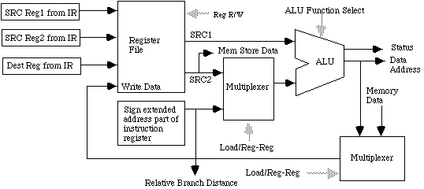
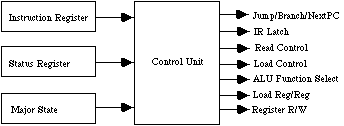

Unitatea centrala a unui microcalculator este realizata fizic in jurul unui microprocesor. Microprocesor nu reprezinta un calculator ci numai o parte a sa , înglobînd în general dispozitivul aritmetic si dispozitivul de comanda . Pentru a realiza un calculator cu ajutorul unui microprocesor , denumit în mod obisnuit microcalculator sau microsistem de calcul este necesar a se reuni microprocesorul cu elemente de memorie si circuite de interfata . Sistemele pe baza de microprocesor necesita existenta unei memorii iar procesarea informatiei se face la nivel de cuvînt . Cuvintele adresate pot exprima o instructiune pentru procesor sau o data pentru procesare . In fiecare locatie a memoriei este stocat un cuvînt cu o lungime de n biti . Pentru un microprocesor , lungimea n a cuvîntului , este o caracteristica principala acesta exprimînd capacitatea uzuala de procesare . Exista microprocesoare care lucreaza cu lungimi de 8, 16 32 sau 64 de biti . Fiecare locatie a memoriei este adresata cu un cuvînt de adresare de m biti , deci pot fi selectate în total 2m locatii ale memoriei. Microprocesoarele sunt realizate pe un chip de siliciu de cativa milimetri patrati.
ALU lucreaza de obicei cu doi operanzi.Adesdeori unul dintre operanzi se gaseste in locatiile
interne in timp ce celalalt operand este adus din memoria sistem.In cazul cind ambii operanzi se afla
inauntrul procesorului instructiunea aritmetica sau logica se executa mult mai repede.
In cazul in care ciclul de fetch nu este prea performant este mai potrivita incarcarea in prealabil a
operanzilor in niste locatii de memorare numite latch-uri dupa care lansata instructiunea aritmetica sau logica.
Destinatia ALU este efectuarea de operatii aritmetice sau logice.

In timpul ciclului de fetch , procesorul plaseaza continutul pointerului de instructiuni pe magistrala de adrese.Semnalul de Read este lansat pe magistrala de comenzi pentru citirea din memorie intr-un registru intern din procesor numit registrul de instructiuni .
In timpul ciclului de decodificare, pointerul de instructiuni este ajustat pentru a marca urmatoarea instructiune ce urmeaza a fi executata(ea este calculata din actuala adresa la care se adauga 1 sau valoarea saltului in cazul instructiunilor se salt).
Scopul pointerului de instructiuni este de a tine adresa din memorie a instructiunii pe care procesorul este in curs s-o execute.
Instructiunea decodificata trebuie sa fie in genul:
Scopul registruli de instructiuni este de a tine o copie a instructiunii pe care procesorul este in curs sa o execute .
Motivul pentru care se utilizeaza registrele interne este viteza.Datele dinauntrul procesorului sunt prelucrate mult mai rapid decit cele din memoria sistem din cauza ca nu mai este nevoie de ciclii de fetch pentru extragerea datelor in vederea prelucrarii
De exemplu pentru a inmulti valorile a doua locatii de memorie este nevoie de trei ciclii de fetch .
Scopul registrelor interne de destinatie generala este de a furniza temporar locatii de memorie pentru variabile si operanzi.
Procesoarele din familia Intel pe 32 biti au urmatoarea structura de registrii generali:Unitatea de executie contine registrii de date si ALU.Ea selecteaza registrii pentru a lucra cu ei
,alimenteaza ALU ,selecteaza rezultatul si il trimite inapoi in registrii.In incarcare sau memorare
datele pot ocoli ALU si datele pot trece din memorie in registrii sau din registrii in registrii
nemodificate.Alu poate servi si la calcularea adreselor de salt.

In cazul setului de instructiuni RISC ,selectia registrelor sursa si destinatie este un pic mai ciudata
din cauza ca operanzii sura sau destinatie au pozitii fixe in cadrul registrului de instructiuni IR
si este o simpla treaba de conectare a registrului IR cu registrii gemnerali.
In cadrul setului de instructiuni CISC,sursa si destinatia pot fi precizate in diferite parti ale
instructiunii deci ale IR ului sau chiar in diferite cuvinte.Deaceea cimpurile registrului IR trbuie
trecute printr-un selector care este controlat de UC -unitatea de control.
In cadrul setului RISC exista doar citeva tipuri de instructiuni de tipul regisru registru,sau incarcare
memorare.In cadrul arhitecturii CISC sursa ALU poate veni din memorie sau din registrii gemnerali la fel
si rezultatul poate fi pus in registrii sau in memorie deci e nevoie de multiplexoare suplimentare pentru
a putea realiza astfel de instructiuni. Arhitecturile CISC au un numar mare de moduri de adresare si deci
rezulta un circuit complex pentru calcularea adreselor.Procesoarele RISC pot specifica registrul impreuna cu
cu adresa intr-o singura instructiune.
Unitatea de control este un automat cu numar finit de stari care are ca intrare IR ul ,
registrul de stari care este de fapt iesirea de stari ale ALU si starea ciclului in curs.
Programul pe care il ruleaza UC este fie cablat utilizind porti logice fie inscris intr-un PLA.
Iesirile UC-ului sunt trimise prin procesor fiecarui punct care necesita coordonare sau directionare
din partea UC -ului.

Astfel: